정보통신기사(구) (2014-05-31 기출문제)
1과목: 디지털 전자회로
1. 정류회로의 리플률을 바르게 나타낸 식은?
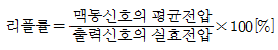
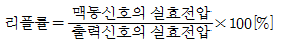
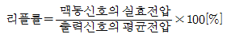
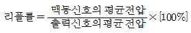
(정답률: 77%)

2. 반도체 다이오드의 두 가지 바이어스(Bias) 조건으로 맞는 것은?
- 발진과 증폭
- 블록과 비블록
- 유도와 비유도
- 순방향과 역방향
(정답률: 82%)
3. 120[V], 60[Hz]의 정현파가 전파정류회로에 인가되었을 때 출력신호의 주파수는?
- 30[Hz]
- 60[Hz]
- 90[Hz]
- 120[Hz]
(정답률: 77%)
4. 다음 증폭기 회로에서 βDC=75인 경우 컬렉터 전압VC는 약 얼마인가? (단, VBE=0.7[V]이다.)
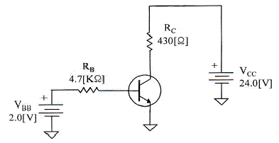
- 15.1[V]
- 20.1[V]
- 19.1[V]
- 16.1[V]
(정답률: 65%)
5. 차동증폭기의 동위상 신호제거비(CMRR)를 표현한 식으로 맞는 것은?
- CMRR = 차동이득 +동위상이득
- CMRR = 차동이득 -동위상이득
- CMRR = 동위상이득 ÷ 차동이득
- CMRR = 차동이득 ÷ 동위상이득
(정답률: 70%)
6. 3단 종속 전압증폭기의 이득이 각각 10배, 20배, 50배일 때 종합증폭도와 종합이득은 각각 얼마인가?
- 종합증폭도는 10배, 종합이득은 20[dB]
- 종합증폭도는 100배, 종합이득은 40[dB]
- 종합증폭도는 1,000배, 종합이득은 60[dB]
- 종합증폭도는 10,000배, 종합이득은 80[dB]
(정답률: 78%)
7. 다음 부궤환 방식 중 입력 임피던스는 감소하고 출력 임피던스가 증가하는 방식은?
- 전류 병렬 궤환회로
- 전압 병렬 궤환회로
- 전류 직렬 궤환회로
- 전압 직렬 궤환회로
(정답률: 63%)
8. 다음 중 수정 발진기에서 주파수 변동이 발생하는 원인이 아닌 것은?
- 전원 전압의 변동
- 주위 온도의 변화
- 부궤환 계수의 변동
- 발진기 부하의 변동
(정답률: 60%)
9. 병렬저항 이상형 발진회로에서 캐패시터 값이 0.01[μF]일 경우 1,500[Hz]의 발진주파수를 얻으려면 R값은 약 얼마인가?
- 1.51[kΩ]
- 2.52[kΩ]
- 3.23[kΩ]
- 4.33[kΩ]
(정답률: 43%)
10. 다음 중 AM 방식의 변조도에 대한 설명으로 틀린 것은?
- 변조도가 1일 때 완전변조라 한다.
- 변조도가 1보다 작으면 파형의 일부가 잘려 일그러짐이 생긴다.
- 변조도는 신호파의 진폭과 반송파의 진폭의 비로 나타낸다.
- 변조도가 1보다 큰 경우를 과변조라 한다.
(정답률: 75%)
11. 디지털 데이터를 전송하기 위해 입력신호에 따라 반송파의 위상을 변화시키는 변조방식은?
- ASK
- QAM
- FSK
- PSK
(정답률: 78%)
12. 저역 통과 RC 회로에서 시정수가 의미하는 것은?
- 응답의 위치를 결정해준다.
- 입력의 주기를 결정해준다.
- 입력의 진폭 크기를 표시한다.
- 응답의 상승속도를 표시한다.
(정답률: 73%)
13. 클리퍼(clipper) 회로에서 입력 파형과 출력 파형간의 관계를 결정하는 소자는?
- 다이오드
- 트랜지스터
- 콘덴서
- 코일
(정답률: 71%)
14. 다음 중 Schmitt Trigger(슈미트 트리거) 회로에 대한 설명으로 틀린 것은?
- 1개의 안정상태를 갖는 회로이다.
- 입력전압의 크기가 ON, OFF 상태를 결정한다.
- A/D 변환기 또는 비교회로에 응용되고 있다.
- 구형펄스 발생회로에 이용된다.
(정답률: 76%)
15. 다음 진리표는 어떤 논리회로에 대한 진리표인가?
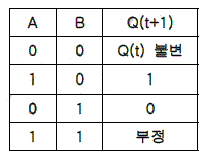
- 전가산기
- 반가산기
- JK 플립플롭
- RS 플립플롭
(정답률: 67%)
16. 다음 중 논리방정식이 잘못된 것은?
- A+1 = A
- Aㆍ0 = 0
- A+AㆍB = A
- Aㆍ(A+B) = A
(정답률: 78%)
17. 16진수 1A를 2진수로 표시하면?
- 00001110
- 10100001
- 11111100
- 00011010
(정답률: 79%)
18. 다음 중 비동기식 카운터에 대한 설명으로 틀린 것은?
- 리플 카운터라고도 한다.
- 고속 카운팅에 주로 사용된다.
- 전단의 출력이 다음 단의 트리거 입력이 된다.
- 회로가 단순하므로 설계가 쉽다.
(정답률: 67%)
19. 다음 그림의 회로의 명칭은 무엇인가?
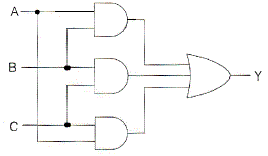
- 일치 회로
- 반일치 회로
- 다수결 회로
- 비교 회로
(정답률: 73%)
20. 십진 BCD 계수가 출력으로 그림과 같은 표시를 이용하려면 어떤 디코더 드라이버가 필요한가?
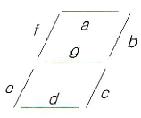
- BCD-10 세그먼트
- Octal-10 세그먼트
- BCD-7 세그먼트
- Octal-7 세그먼트
(정답률: 83%)
2과목: 정보통신 시스템
21. 제4세대 이동통신서비스에 가장 가까운 서비스는?
- Wibro
- WiFi
- LTE
- Bluetooth
(정답률: 89%)
22. 교환국 수가 n일 때 메쉬형(그물형) 통신망의 중계 회선수는?
- n
- n(n-1)/2
- n/2
- n-1
(정답률: 90%)
23. 정보통신 시스템은 크게 데이터 전송계와 데이터 처리계로 분리할 수 있다. 다음 중 데이터 전송계가 아닌 것은?
- 단말장치
- 통신 소프트웨어
- 데이터 전송회선
- 통신 제어장치
(정답률: 75%)
24. OSI 7계층 참조모델에서 인터넷 프로토콜(IP)의 계층은?
- Presentation Layer
- Network Layer
- Data-link Layer
- Physical Layer
(정답률: 88%)
25. 다음 데이터 링크 계층의 프로토콜 중 비트 중심의 프로토콜이 아닌 것은?
- SDLC
- X.25
- HDLC
- PPP
(정답률: 79%)
26. RS-232C 통신방식의 제정기관은?
- ISO
- IEEE
- EIA
- ITU
(정답률: 57%)
27. 정보를 송수신할 수 있는 능력을 가진 개체로써, 주어진 입력에 대하여 어떤 기능을 수행하고 출력하는 것은?
- 데이터(Data)
- 엔티티(Entity)
- 프로토콜(Protocol)
- 스테이트(State)
(정답률: 81%)
28. 다음 중 대등-대-대등(pear-to-pear) 프로세스에 대한 설명으로 가장 적절한 것은?
- 통신장치 간에 통신할 때 해당계층에서 통신하는 각 장치의 프로세스
- 하나의 장치에서 각 계층이 바로 아래 계층의 서비스를 이용하는 프로세스
- 인접한 계층 사이의 인터페이스를 통해 전달되는 프로세스
- 임의의 두 통신장치 간에 자신의 구조에 상관없이 서로 통신할 수 있도록 해 주는 프로세스
(정답률: 81%)
29. 인터네트워킹을 구축할 때 요구되는 사항이 아닌 것은?
- 네트워크 간의 링크를 제공하며 최소한 물리적 계층과 링크의 제어연결이 요구된다.
- 상이한 네트워크들 상의 프로세스들 사이에 데이터의 경로 배정과 전달에 관한 모든 것을 제공하여야 한다.
- 여러 종류의 네트워크들과 게이트웨이의 사용에 대한 트랙을 보존하며 상태정보를 유지하고 요금계산 서비스를 제공하여야 한다.
- 다양한 서비스를 위해 임의 구성된 네트워크 구조 자체를 자유롭게 변형할 수 있어야 한다.
(정답률: 81%)
30. 패킷 교환망(PSDN)에서 패킷 교환망 접속 기능을 갖고 있지 않은 비패킷 단말장치를 패킷 교환망으로 접속시켜주는 기능을 수행하는 장치는 무엇인가?
- TAD
- RAD
- PAD
- WAD
(정답률: 84%)
31. 근거리통신망(LAN)에서 사용되는 장비인 브리지(Bridge)는 OSI 7계층의 어느 계층의 기능을 주로 수행하는가?
- 응용계층
- 데이터링크계층
- 네트워크계층
- 트랜스포트계층
(정답률: 83%)
32. PCM 통신방식에서 4[kHz]의 대역폭을 갖는 음성 정보를 8[bit] 코딩으로 표본화하면 음성을 전송하기 위해 필요한 데이터 전송률은 얼마인가?
- 4[kbps]
- 8[kbps]
- 32[kbps]
- 64[kbps]
(정답률: 75%)
33. VAN(부가가치통신망)의 서비스 기능 중 정보처리기능에 속하지 않는 것은?
- 데이터베이스 관리
- 계산처리
- 데이터 변환
- 각종 업무 처리
(정답률: 54%)
34. 다음 중 IPv6의 주소 유형이 아닌 것은?
- Basiccast
- Unicast
- Anicast
- Multicast
(정답률: 81%)
35. 다음 중 위성통신에서 업 링크(Up link)에 대한 설명으로 옳은 것은?
- 위성으로부터 지구국으로의 회선
- 지구국으로부터 위성으로의 회선
- 지구국으로부터 지구국으로의 회선
- 위성으로부터 위성으로의 회선
(정답률: 86%)
36. 다음 중 ISDN의 전송구조와 전송속도로 적합하지 않는 것은? (단, 전송속도는 프레임화 및 동기를 위한 부가비트가 추가된 전송속도를 나타낸다.)
- 23B+D : 1.544[Mbps]
- 3H0+D : 2.048[Mbps]
- 30B+D : 2.048[Mbps]
- 5H0+D : 2.048[Mbps]
(정답률: 60%)
37. 다음 중 프레임 릴레이의 특징이 아닌 것은?
- 연결지향적 데이터 전송으로써, 낮은 전송률과 높은 지연 특성을 갖는다.
- 데이터링크 계층에서만 오류검출 기능을 수행한다.
- 논리적 링크를 지원하여 하나의 물리적 회선에 PVC를 통해 여러 단말기 간의 통신이 가능하게 한다.
- 전용선을 이용한 WAN 구성보다 가격이 더욱 저렴하다.
(정답률: 43%)
38. 근거리통신망(LAN)에서 사용되는 이더넷 프레임(Ethernet Frame)의 목적지 주소크기와 출발지 주소크기의 합은 얼마인가?
- 6[bits]
- 12[bits]
- 64[bits]
- 96[bits]
(정답률: 67%)
39. 다음 중 정보통신망 운영계획에 포함되어야 할 내용이 아닌 것은?
- 연간, 월간 장기계획
- 주간, 일간 단기계획
- 최적 회선망의 설계조건 검토
- 작업내역, 작업량, 우선순위, 주기, 운전소요시간 운전형태 및 시스템구성
(정답률: 75%)
40. 통신망의 교환접속상의 품질에 관한 규격 기준이 아닌 것은?
- 품질기준
- 설계기준
- 안정기준
- 관리기준
(정답률: 48%)
3과목: 정보통신 기기
41. 다음 중 데이터 전송계에서 신호변환 외에 전송신호의 동기제어 송수신 확인, 전송 조작절차의 제어 등을 담당하는 역할을 하는 장치는?
- DCE
- DTE
- DDU
- DID
(정답률: 84%)
42. 정보통신시스템 소프트웨어에서 운영체제의 기능이 아닌 것은?
- 메모리관리
- 잡(job)관리
- 범용라이브러리
- 통신제어
(정답률: 77%)
43. 정보처리과정에서 데이터의 처리가 컴퓨터에 의해서만 이루어지는 시스템은?
- Off Line
- Real time
- On Line
- Batch Process
(정답률: 75%)
44. 1,200[bps] 속도를 갖는 4채널을 다중화 한다면 다중화 설비 출력 속도는 적어도 얼마 이상이어야 하는가?
- 1,200[bps]
- 2,400[bps]
- 4,800[bps]
- 9,600[bps]
(정답률: 84%)
45. 4-PSK 변조방식에서 변조속도가 1,200[baud]일 때 데이터 전송속도는 몇 [bps]인가?
- 1,200[bps]
- 2,400[bps]
- 3,600[bps]
- 4,800[bps]
(정답률: 80%)
46. 다음 중 LAN에서 사용되는 리피터의 기능으로 맞는 것은?
- 네트워크 계층에서 활용되는 장비이다.
- 두 개의 서로 다른 LAN을 연결한다.
- 모든 프레임을 내보내며, 필터링 능력을 갖고 있다.
- 같은 LAN의 두 세그먼트를 연결한다.
(정답률: 69%)
47. 다음 중 포트 공동 이용기(Port-Sharing unit)와 포트 선택기(Port Selector)에 대한 설명으로 틀린 것은?
- 포트 공동 이용기는 모뎀, 선로 공동 이용기의 대체 장치로 사용이 가능하다.
- 포트 공동 이용기는 컴퓨터 설치 장소와 가까운 곳에 있는 단말기 이용이 가능하다.
- 포트 선택기는 컴퓨터 포트의 사용을 원하는 단말기들을 낮은 이용률 포트에 연결시켜 주는 기능이 있다.
- 포트 선택기는 폴링 네트워크에서 이용된다.
(정답률: 53%)
48. 송수신할 데이터가 있는 단말기에만 타임슬롯(time slot)을 할당하는 방식은 무엇인가?
- 주파수분할 다중화 방식
- 부호화 방식
- 변조 방식
- 통계적 시분할 다중화 방식
(정답률: 84%)
49. 다음 중 ATSC 영상방식에서 채용한 오류정정 부호화 과정이 아닌 것은?
- 데이터 랜덤화
- 리드 솔로몬 부호화
- 격자 부호화
- 터보 부호화
(정답률: 70%)
50. 다음 중 CATV의 헤드엔드(Head End)의 주요 기능이 아닌 것은?
- 채널 변환
- 신호 분리 및 혼합
- 옥내 분배
- 신호 송출
(정답률: 77%)
51. 다음 중 화상통신 회의시스템의 기본 구성 요소가 아닌 것은?
- 전송로
- 단말기
- 컴퓨터 센터 시스템
- 다중화기
(정답률: 73%)
52. 영상회의 시스템의 비디오 프레임 포맷을 전송하고자 한다. 가장 높은 데이터 전송률을 갖는 포맷은?
- Sub-QCIF
- QCIF
- CIF
- 4CIF
(정답률: 74%)
53. 20개의 중계선으로 5[Erl]의 호량은 운반하였다면 이 중계선의 효율은 몇 [%]인가?
- 20[%]
- 25[%]
- 30[%]
- 35[%]
(정답률: 87%)
54. 다음 중 WCDMA 방식에 대한 설명으로 옳은 것은?
- 주파수 간격은 1.15[MHz]이다.
- GPS로 기지국간 시간 동기를 맞추어 전송한다.
- 서로 다른 코드로 기지국을 구분한다.
- 칩 전송속도는 5.2288[Mcps]이다.
(정답률: 64%)
55. 인공위성이나 우주 비행체는 매우 빠른 속도로 운동하고 있으므로 전파 발진원의 이동에 따라서 수신주파수가 변하는 현상은?
- 페이져 현상
- 플라즈마 현상
- 도플러 현상
- 전파지연 현상
(정답률: 84%)
56. 다음은 이동통신 기술 중 무엇에 관한 설명인가?
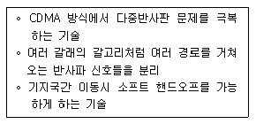
- Rake 수신기 기법
- CDMA 채널 설정 방법
- HSDPA 초기 동기 구분 기술
- MIMO 기술
(정답률: 81%)
57. CDMA 시스템의 이론적인 주파수 재사용률(FRP : Frequency Reuse Pattern)은 얼마인가?
- 1
- 2
- 3
- 4
(정답률: 69%)
58. 인터넷 텔레포니의 핵심 기술로서 지금까지 PSTN을 통해 이루어졌던 음성 전송을 인터넷 망을 사용하여 제공하는 것은?
- VoIP
- DMB
- WiBro
- VOD
(정답률: 89%)
59. 다음 중 컴퓨터 주기억장치(RAM, ROM)에 대한 설명으로 틀린 것은?
- OS가 컴퓨터 부팅시에 보조 기억장치로부터 읽혀져 RAM에 저장된다.
- 컴퓨터를 운용하는데 쓰이는 기본 프로그램 BIOS는 ROM에 기억되어 있다.
- DRAM은 플립플롭을 집적화한 것이며, SRAM은 콘덴서를 집적화한 것이다.
- 중앙처리장치 속도가 RAM보다 빠르므로 캐시 메모리가 필요하다.
(정답률: 71%)
60. 다음 중 멀티미디어 응용분야가 아닌 것은?
- 원격회의
- 원격교육
- 원격진료
- 원격검색
(정답률: 88%)
4과목: 정보전송 공학
61. 다음 그림과 같은 변조된 파형을 얻을 수 있는 변조 방식은?
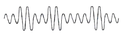
- 진폭 편이 변조 방식(ASK)
- 주파수 편이 변조 방식(FSK)
- 위상 편이 변조 방식(PSK)
- 직교 진폭 변조 방식(QAM)
(정답률: 74%)
62. 기호속도가 1[kHz]이고 4개의 기호확률이 1/2, 1/4, 1/8, 1/8일 때 엔트로피율은 얼마인가?
- 1,750[bps]
- 1,850[bps]
- 1,900[bps]
- 2,000[bps]
(정답률: 73%)
63. 표본화 정리에 의하면 주파수 대역이 60[Hz]~3.6[kHz]인 신호를 완전히 복원하기 위한 표본화 주기는?
- 1/60[초]
- 1/3.6[초]
- 1/7,200[초]
- 1/6,800[초]
(정답률: 84%)
64. 공통선 신호방식은 별도의 신호 전용채널을 통해 신호정보를 다중화하여 고속으로 전송하는 방식이다. 이때 사용되는 다중화 방식은 무엇인가?
- FDM
- TDM
- CDM
- WDM
(정답률: 44%)
65. 광케이블에서 광에너지의 전달속도인 군속도(group velocity)는 코어의 굴절률과 어떤 관계를 가지는가?
- 코어의 굴절률에 비례한다.
- 코어의 굴절률에 반비례한다.
- 코어의 굴절률의 제곱에 비례한다.
- 코어의 굴절률의 제곱에 반비례한다.
(정답률: 80%)
66. 다음의 손실 중 동축케이블에 나타나는 손실은?
- 적외선 흡수 손실
- 레일리 산란 손실
- 와류 손실
- 구조 불완전 손실
(정답률: 77%)
67. 다음 문장의 괄호 안에 들어갈 내용으로 적합한 것은?
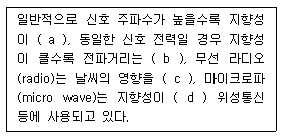
- ⒜ 크며, ⒝ 멀고, ⒞ 받으며, ⒟ 크므로
- ⒜ 크며, ⒝ 짧고, ⒞ 안받으며, ⒟ 작으므로
- ⒜ 작으며, ⒝ 멀고, ⒞ 받으며, ⒟ 크므로
- ⒜ 작으며, ⒝ 짧고, ⒞ 안받으며, ⒟ 작으므로
(정답률: 83%)
68. 다음 보기 중 일반적으로 파장이 긴 것부터 순서대로 나열한 것은?
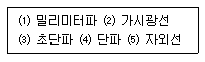
- ⑴-⑵-⑶-⑷-⑸
- ⑵-⑷-⑴-⑶-⑸
- ⑷-⑶-⑴-⑵-⑸
- ⑸-⑴-⑵-⑷-⑶
(정답률: 79%)
69. 동기방식의 구분 중 비트동기의 분류로 맞는 것은?
- 연속동기, 비동기
- 블록동기, 문자동기
- 문자동기, 플래그동기
- 파일럿동기, 클럭동기
(정답률: 45%)
70. 입력 데이터 비트율(bit rate)이 4,800[bps]일 때, 맨체스터 부호인 경우 심볼률 및 대역폭은 각각 얼마인가?
- 2,400[symbols/sec], 2,400[Hz]
- 4,800[symbols/sec], 4,800[Hz]
- 9,600[symbols/sec], 9,600[Hz]
- 12,000[symbols/sec], 12,000[Hz]
(정답률: 76%)
71. HDLC 전송 프로토콜의 국 사이에서 교환되는 데이터 전송 단위는?
- 블록
- 프레임
- 비트
- 패킷
(정답률: 74%)
72. 데이터 통신방식 중 Full-Duplex 방식의 가장 큰 장점은?
- 비동기식 전송방식에 적합하다.
- 데이터를 동시에 전송하지 않는다.
- 동시에 송수신이 가능하다.
- 데이터를 병렬로 보낼 수 있다.
(정답률: 85%)
73. 다음 중 TCP에 대한 설명으로 틀린 것은?
- TCP는 트랜스포트 계층의 프로토콜이다.
- TCP에서는 혼잡을 회피하기 위한 방법으로 Slow-Start 알고리즘을 사용한다.
- TCP는 UDP와 같이 데이터의 전송 전에 연결을 설정하지 않고 상태정보를 유지한다.
- 각 TCP 접속의 종단에 일정 크기의 버퍼를 가지고 있어서 흐름제어와 혼잡제어를 수행한다.
(정답률: 83%)
74. 다음 중 서브넷 마스크(Subnet Mask)에 대한 설명으로 옳지 않은 것은?
- 서브넷 마스크는 라우터에서 서브넷 식별자를 구별하기 위해서 필요한 것이다.
- 서브넷 마스크는 IP주소와 마찬가지로 32비트로 이루어져 있다.
- 서브넷 마스크의 비트열이 1인 경우 해당 주소의 비트열의 네트워크 주소 부분으로 IP 간주된다.
- 서브넷 마스크를 적용하는 방법은 목적지 IP주소의 비트열에 서브넷 마스크 비트열을 OR 논리연산을 적용한다.
(정답률: 72%)
75. 다음 중 라우터의 주요 기능이 아닌 것은?
- 경로 설정
- IP 패킷 전달
- 라우팅 테이블 갱신
- 폭주 회피 라우팅
(정답률: 75%)
76. 다음 중 IP의 특성이 아닌 것은?
- 비접속형
- 신뢰성
- 주소 지정
- 경로 설정
(정답률: 80%)
77. Mobile IP 서비스에서 사용되는 바인딩(Binding)에 대한 설명으로 맞는 것은?
- HA(Home Agent)가 MN(Mobile Node)에게 데이터를 보내기 위해 터널을 연결하는 것
- COA(Care Of Address)와 MN(Mobile Node)의 홈 주소를 연결시키는 것
- HA(Home Agent)와 FA(Foreign Agent)가 자신이 어느 링크에 접속되어 있는지를 광고로 알리는 것
- FA(Foreign Agent)가 MN(Mobile Node)과 다른 MN(Mobile Node)을 연결시키는 것
(정답률: 67%)
78. 어느 특정시간 동안 10,000,000개의 비트가 전송되고, 전송된 비트 중 2개가 오류로 판명되었을 때 이 전송의 비트 에러율은 얼마인가?
- 1×10-6
- 1×10-7
- 2×10-6
- 2×10-7
(정답률: 79%)
79. 동기식 전송에 이용되는 것 중 가장 효율적인 오류검출 방식은?
- ARQ(Automatic Repeat Request)
- VRC(Vertical Redundancy Check)
- CRC(Cyclic Redundancy Check)
- LRC(Longitudinal Redundancy Check)
(정답률: 67%)
80. 다음 전송오류 제어 방식 중 성질이 다른 하나는?
- 수평, 수직 패리티 방식
- 자기 정정 방식
- 해밍 부호 방식
- 재송 정정 방식
(정답률: 58%)
5과목: 전자계산기일반 및 정보통신설비기준
81. 다음 보기의 기억장치 중 속도가 가장 빠른 것에서 느린 순서대로 나열한 것으로 맞는 것은?
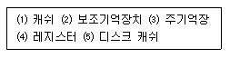
- ⑷-⑶-⑴-⑸-⑵
- ⑷-⑸-⑶-⑴-⑵
- ⑷-⑴-⑶-⑸-⑵
- ⑷-⑸-⑴-⑶-⑵
(정답률: 76%)
82. 0-주소 명령어(zero-address instruction)에서 사용하는 특정한 기억장치 조직은 무엇인가?
- 그래프(graph)
- 스택(stack)
- 큐(queue)
- 트리(tree)
(정답률: 77%)
83. 32비트의 데이터에서 단일 비트 오류를 정정하려고 한다. 해밍 오류 정정 코드(hamming Error Correction Code)를 사용한다면 몇 개의 검사 비트들이 필요한가?
- 4비트
- 5비트
- 6비트
- 7비트
(정답률: 55%)
84. 다음 중 운영체제의 기능이 아닌 것은?
- 파일 관리
- 장치 관리
- 메모리 관리
- 자료 관리
(정답률: 62%)
85. 다음 그림은 마이크로컴퓨터의 동작 원리를 나타내는 것이다. 빈칸에 들어갈 알맞은 용어는?
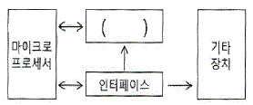
- RAM
- 중앙처리장치
- 플로피 디스크 드라이버
- 하드디스크
(정답률: 66%)
86. 다음 중 그레이 코드(Gray Code)의 특징이 아닌 것은?
- 2비트 변환되는 코드이다.
- 4칙 연산에 사용하는 것은 적합하지 않다.
- A/D 변환기에 사용한다.
- 입출력 코드와 주변장치용으로 이용한다.
(정답률: 53%)
87. 다음 중 인터럽트의 발생 원인에 대한 설명으로 틀린 것은?
- 컴퓨터 구성품의 물리적 결함
- 주변 장치들의 동작에 따른 중앙처리장치에 대한 기능 요청
- 프로그램 내 A 루틴에서 B 루틴으로의 연결
- 긴급 정전사태 발생으로 인한 컴퓨터 전원 OFF
(정답률: 63%)
88. 다음 중 공개 소프트웨어에 대한 설명으로 틀린 것은?
- 무료의 의미보다는 개방의 의미가 있다.
- 라이센스(License) 정책을 만들어 유지하도록 한다.
- 모든 상업적인 목적에 사용은 불가하다.
- 공개 소스 소프트웨어와 같은 의미로 사용한다.
(정답률: 75%)
89. 다음 문장에서 설명하는 운영체제의 유형은?
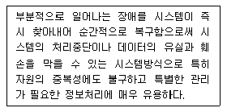
- 시분할 시스템(Time-sharing System)
- 다중 처리(Multi-processing)
- 다중 프로그래밍(Multi-programming)
- 결함허용 시스템(Fault-tolerant System)
(정답률: 74%)
90. 다음은 전감산기의 진리표이다. 이 진리표를 이용하여 두 개의 차 D의 불 함수에 대한 표현으로 옳은 것은?
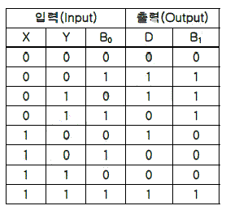
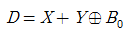
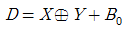
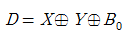
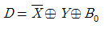
(정답률: 68%)
91. 다음 중 정부에서 정보통신망을 효율적으로 활용하기 위해 권장하는 사항이 아닌 것은?
- 정보통신망 상호간의 연계 운영
- 정보통신망의 경영 관리
- 정보통신망의 표준화
- 정보의 공동 활용 체제 구축
(정답률: 71%)
92. 다음 중 전기통신사업자의 전기통신역무 제공 의무사항이 아닌 것은?
- 전기통신사업자는 정당한 사유 없이 전기통신 역무의 제공을 거부하여서는 아니 된다.
- 전기통신사업자는 그 업무 처리에 있어서 공평하고 신속하며 정확하게 하여야 한다.
- 전기통신역무의 요금은 전기통신역무를 공평하고 저렴하게 제공 받을 수 있도록 합리적으로 결정되어야 한다.
- 기간통신사업자는 전기통신설비 등을 통합 운영하여서는 아닌 된다.
(정답률: 80%)
93. 일반적으로 도로상에 설치되는 가공통신선의 높이는 노면으로부터 얼마 이상으로 설치하는가?
- 2[m]
- 3[m]
- 4.5[m]
- 6.5[m]
(정답률: 76%)
94. 다음 중 일반적인 통신관련시설의 접지저항 허용 기준은 얼마인가?
- 10[Ω] 이하
- 20[Ω] 이하
- 25[Ω] 이하
- 30[Ω] 이하
(정답률: 76%)
95. 전화급 평형회선은 회선 상호 간 방송통신콘텐츠의 내용이 혼입되지 아니하도록 두 회선 사이의 근단누화 또는 원단누화의 감쇠량은 얼마 이상이어야 하는가?
- 62데시벨
- 65데시벨
- 68데시벨
- 72데시벨
(정답률: 62%)
96. 전기통신설비를 이용하거나 전기통신설비와 컴퓨터 및 컴퓨터의 이용기술을 활용하여 정보를 수집, 가공, 저장, 검색, 송신 또는 수신하는 정보통신체제는 무엇인가?
- 부가통신망
- 전기통신망
- 정보통신망
- 전자통신망
(정답률: 72%)
97. 직류는 750볼트, 교류는 600볼트를 초과하고 각각 7,000볼트 이하인 전압은 무엇인가?
- 고압
- 저압
- 특별고압
- 중고압
(정답률: 80%)
98. 방송통신재난에 대비하기 위하여 수립하여야 하는 방송통신재난관리 기본계획에 포함되어야 하는 사항이 아닌 것은?
- 우회 방송통신 경로의 확보
- 방송통신회선설비의 연계 운용을 위한 정보체계의 구성
- 피해복구 물자의 확보
- 통신재난을 입은 전기통신설비의 매수
(정답률: 85%)
99. 다음 중 구내통신선로설비의 설치 및 철거방법으로 잘못된 것은?
- 구내에 5회선 이상의 국선을 인입하는 경우 옥외 회선은 지하로 인입한다.
- 사업자는 이용약관에 따라 체결된 서비스 이용계약이 해지된 경우에는 설치된 옥외회선을 철거하여야 한다.
- 배관시설은 설치된 후 배선의 교체 및 증설시공이 쉽게 이루어질 수 있는 구조로 설치하여야 한다.
- 인입맨홀ㆍ핸드홀 또는 인입주까지 지하인입배관을 설치한 경우에는 지하로 인입하지 않아도 된다.
(정답률: 81%)
100. 적합성평가를 받은 기자재가 적합성평가 기준대로 제조ㆍ수입 또는 판매되고 있는지 조사 또는 시험하는 것을 무엇이라고 하는가?
- 품질관리
- 규격관리
- 사후관리
- 시험관리
(정답률: 78%)
리플률(%) = (리플전압 ÷ 정전압) × 100
위 식에서 리플전압은 정류회로에서 발생하는 파동 형태의 전압 변동을 의미하고, 정전압은 정류회로에서 안정적으로 출력되는 전압을 의미한다. 따라서 리플률은 리플전압이 정전압에 대해 얼마나 큰 비율로 발생하는지를 나타내는 지표이다.
따라서 보기 중에서 ""가 정답이다. 이는 리플전압이 정전압에 대해 10% 이하로 발생할 때, 안정적인 전압을 출력할 수 있는 정류회로라는 것을 나타내는 것이다.